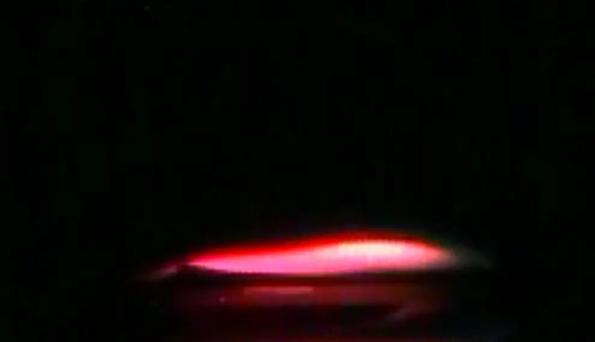

NASA BASS-II / INTERNATIONAL SPACE STATION
Flame in
Freefall
Explore how flames ignite, spread, and extinguish in microgravity across spacecraft materials.

KEY FINDINGS FOR CREWED HABITATS
-
Microgravity extends flammability
PMMA rods kept burning down to 13.5% O₂ in the weak airflow typical of spacecraft ventilation near surfaces, below the 15.4% limit of the normal-gravity upward test NASA uses to screen materials.
NASA TM · §6.1.4 · p. 76 ↗ -
Starving the flame works
Thin PMMA stops spreading below a critical opposed-flow velocity. It does not depend on film thickness and rises as O₂ falls, so cutting ventilation is more effective in leaner air.
NASA TM · §2.2.8 · p. 28 ↗ -
Small fires, toxic smoke
Most tests released well below 100 W, yet CO/CO₂ ratios were an order of magnitude higher than in efficient flue gases: detection and air scrubbing matter as much as the flame.
NASA TM · §1.6 · p. 11 ↗ -
The lunar gap
A Moon base is expected to run at ≥30% O₂ and ≤10.2 psi. BASS-II covers 13.6–22.2% O₂ at ISS pressure, so no trial here reaches lunar habitat conditions.
Challenge brief ↗
ARTEMIS & MARS MISSION DIRECTIVE
Exploration Fire Safety Advisor · Moon & Mars
Translate microgravity combustion findings into actionable fire safety flight rules for Artemis lunar habitats, Mars surface bases, and EVA spacesuits.
Flammability Map · O₂ vs. Airflow
Calibrated initial O₂ against the initial airflow reading, coloured by material. Filled points sustained a flame; rings only flashed or did not ignite. Overlay delineates physical microgravity extinction regimes.
HISTORICAL CONTINUUM
Decades of NASA Microgravity Combustion
From 1960s drop towers to the ISS and the Artemis program: how six decades of experimental fire science paved the way for human deep space exploration.
Trial Explorer
Filter records and select up to three trials to compare side by side.
| Compare | Trial | Material | Flow | Video |
|---|